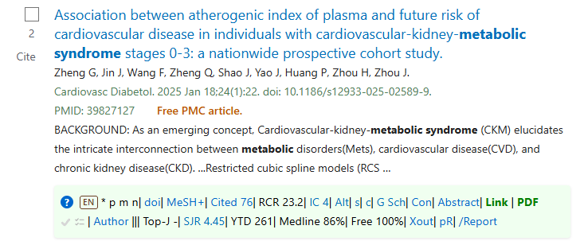

A free Chrome extension that adds citation counts, field-normalized impact, MEDLINE status and journal metrics to every PubMed result — extra measures placed where you can see them directly, as you search.

Two compact lines under every article. The first describes the paper, the second describes the journal.
| On the bar | What it tells you | Source |
|---|---|---|
| ? | Help for every element of the bar, with this article's overall score at the top | Computed |
| EN | Language of the bar's hover text, the help and the popup, in ten languages; also translates result titles | Bundled; Chrome's translator for titles |
| Retracted | Retracted, with a link to the retraction notice | PubMed |
| * | Clears your impact threshold — the row turns green | Computed; formula published in full |
| e · p | Has a published erratum · preprint | PubMed |
| m | Indexed for MEDLINE | PubMed |
| n · t | New (under two years, by create date) · currently trending | PubMed |
| doi | Opens the DOI in DOI Lookup: retractions, citations, journal metrics and open access from a dozen sources (grey when there is no DOI) | doilookup.com |
| MeSH+ | The article's MeSH terms and keywords, exactly as PubMed indexes them | PubMed |
| Cited n | Citation count | NIH iCite, falling back to Europe PMC |
| RCR n.n | Relative Citation Ratio — citations per year normalized to NIH-funded papers in the same field and year | NIH iCite |
| IC n | Influential citations — those that materially shaped the citing work | Semantic Scholar |
| Alt | Attention score from news, policy documents and social media | Altmetric |
| s · c | Similar articles · articles citing this one | PubMed |
| G Sch | The article in Google Scholar, found by its DOI | Google Scholar |
| Con | Interactive citation graph: the references, the citing papers, and both combined | doilookup.com, built on OpenAlex |
| Abstract · Link · PDF | Abstract inline · full text (green when free) · the free PMC PDF when there is one | PubMed, PMC, Crossref |
| ✓ · list | Add the article to your export list · open the list | PubMed |
| Author | First and last authors, with ORCID, h-index, i10-index and two-year citation rate | PubMed; OpenAlex |
| ||| | Divider: the article to its left, the journal to its right | |
| Top-J · SJR | On the curated top-journal list · SCImago Journal Rank | Curated ISSN list; SCImago |
| YTD · Medline % | Journal volume this year, and what share of it reached MEDLINE | Journal Ranking |
| Free % | Share of the journal's articles this year with free full text | Journal Ranking |
| Xout | Re-runs your search without letters, editorials, comments and other non-primary publication types | PubMed |
| pR | Menu of the four PubMed reports on this site | This site |
| /Report | All of the article's measures and links in one easy-to-copy report | All of the above |
Every element explained, with references →
Set an impact threshold, then High Impact filters the current page to results that clear it. Scan 1,000 walks up to five pages of 200 results and collects the full data set as it goes. The bar takes three to six seconds on a normal page; a full thousand takes about a minute.
Xout reopens your search with checkboxes that exclude letters, editorials, comments, errata, retraction notices, reviews, systematic reviews and meta-analyses — roughly a quarter of PubMed — with a live query preview you can copy into your methods.
Term Analysis takes up to twenty variants of one concept and returns PubMed counts for each across four field configurations, validated against MeSH, so you can see which phrasing actually finds the literature.
Tick articles as you go — across pages and searches — and the export list gathers them. Download them as .nbib or .ris for EndNote, Zotero, Mendeley or RefWorks, with full records including abstracts and MeSH terms, or open them as one PubMed search. The popup's Excel button gives the page's bar data as a table, ready to paste into a spreadsheet.
AI pack puts up to 40 articles from the list into one zip file for an AI tool: the full text where it is free (open access articles and NIH author manuscripts, from Europe PMC or PubMed Central), the abstract otherwise, plus a README that explains the citation bar data. For paywalled articles you can add PDFs you have access to, or Convert PDF: the extension turns the PDF into text in your browser, moves the reference lists to a separate file and keeps the table pages as a small PDF — much lighter for an AI to read. The AI pack is new and still being improved.
Four standing reports, rebuilt from a full PubMed pull. Each has live figures and a CSV export.
How PubMed, PMC and MEDLINE overlap, by year. Retractions, preprints, free full text, and MEDLINE's shrinking share.
What each of PubMed's sidebar filters actually returns, counted, for the current year to date.
MeSH usage by Level 2 category with prior-year comparison and unique term counts.
Journals by articles added year to date, with MEDLINE %, free full text %, ORCID % and retraction counts.
Every figure is traceable, because a metric you cannot attribute is a metric you cannot defend in a methods section.
- rather than a substituted number.
It won't show Journal Impact Factor — that is a licensed metric, and this
extension uses only sources that are free to redistribute, which is why SJR
sits in that slot. Author metrics stay blank when neither PubMed nor
OpenAlex links the author to an ORCID, rather than guessing from a name
search. RCR shows - when iCite is
unavailable. Every gap is left visible instead of being filled with a
plausible-looking substitute.